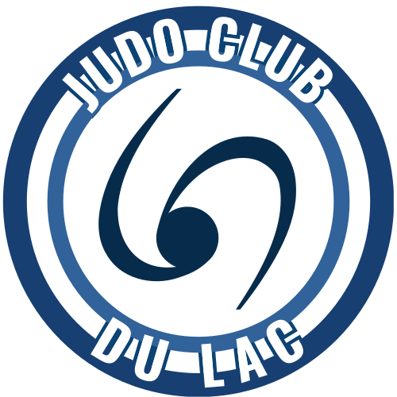

Calendrier 2026
Les calendriers et photos du club sont disponibles à l'achat dès maintenant et jusqu'au 19 décembre. Plus d'infos auprès du club.

Charavines · Le Pin — depuis 1971
« On ne juge pas un homme sur le nombre de fois qu'il tombe mais sur le nombre de fois qu'il se relève. » Jigoro Kano
Depuis 1971, le Judo Club du Lac permet aux jeunes et moins jeunes de découvrir un sport de combat complet : le judo.
En plus de former quelques champions au niveau régional et national, le club, ses enseignants et bénévoles ont permis à des milliers d'enfants et d'adultes de s'épanouir dans cette discipline qui enseigne avant tout le respect de l'adversaire malgré un engagement physique total.
Convivialité, amitié, sérieux et progression restent nos valeurs de base.
Les dernières actualités du club.
Les calendriers et photos du club sont disponibles à l'achat dès maintenant et jusqu'au 19 décembre. Plus d'infos auprès du club.

Les stages multiactivités 8/12 ans proposés par le club se sont déroulés en avril et en juillet. Au programme : activités nautiques, jeux collectifs, orientation et bien sûr judo !
Vous cherchez un club de judo près de chez vous ? Situé au Pin, à deux pas de Charavines et du lac de Paladru, le Judo Club du Lac accueille depuis 1971 des judokas venus de tout le secteur, entre les Vals du Dauphiné et le Pays Voironnais : Charavines, Le Pin, Paladru, Montferrat, Chirens, Bilieu, Oyeu, Virieu, Châbons, Le Grand-Lemps, Voiron, La Tour-du-Pin et alentours.
Que ce soit pour un cours de judo enfant, ado ou adulte, en initiation ou en perfectionnement, notre club vous accueille dans une ambiance conviviale, à quelques minutes de chez vous autour du lac de Paladru.
Survolez une commune : plus la couleur est foncée, plus le club y compte de licenciés.
★ Répartition indicative — saison 2026. Données anonymisées, aucun effectif précis n'est affiché.
Les huit valeurs transmises à chaque judoka.
C'est le respect d'autrui.
C'est faire ce qui est juste.
C'est s'exprimer sans déguiser sa pensée.
C'est être fidèle à la parole donnée.
C'est parler de soi-même sans orgueil.
Sans respect, aucune confiance ne peut naître.
C'est savoir se taire lorsque monte la colère.
C'est le plus pur et le plus fort des sentiments humains.